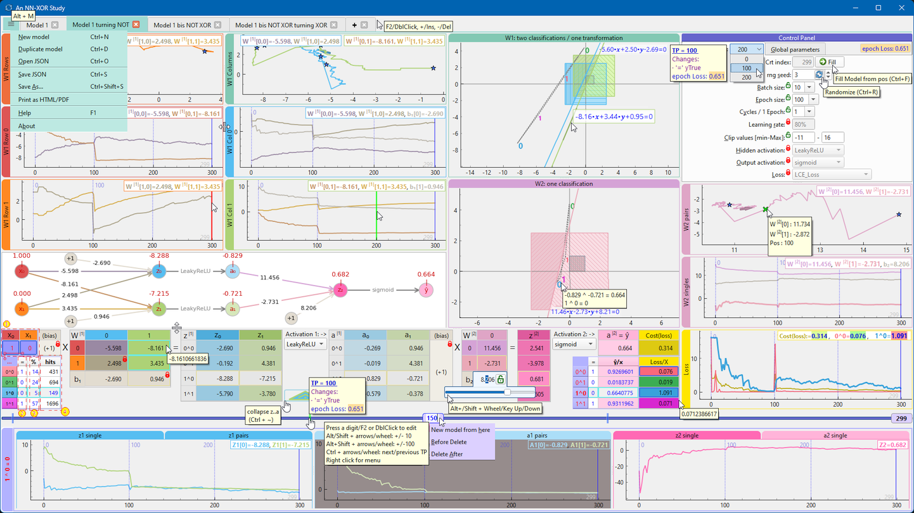
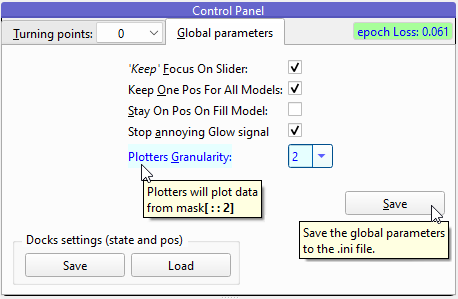

An NN-XOR Study

0. Inception
One day, while browsing the Internet, I came across a video describing the NN XOR problem. Fascinating! And the back-propagation algorithm (1), awesome!
But what happens if I block some parameters or modify them on certain points?
Even the goals?! (You know, all your childhood your (grand)parents teach you what is wrong and what is right, but years later you realize that you have to reshape some of this 'habits'😁)
And what if some experiences (i.e. the training samples) are not uniformly distributed, favoring some of them, like in the real world.
Well, that's interesting. And could be kind of funny, too.
So, I think to myself (2)
... have to see that! In a Qt("cute") way 😉
1. Description
A picture is worth a thousand words

A few words anyway
Legend:
- current (x0, x1), to check the model results :D
- y_True = the 'truth' we want to teach (editable, not necessary XOR)
- Probability distribution of samples in a batch. Editable (spinbox), it will automatically fill the next cells with an even distribution of the rest
- hits: how many times the corresponding operation was generated by rng, until current position
- Losses curve/x vs global Cost (always visible)
- Control Panel / Turning points parameters (can be locked
 for 'randomize' / 'new model from pos' actions)
for 'randomize' / 'new model from pos' actions)
- seed (editable, spinbox) the initial seed for random number generator
- randomize the unlocked
 parameters.
parameters.
- When pos == 0, will also randomize the weights matrix W[1] and W[2].
- The weight matrix may also be affected when pos != 0 by the bounds imposed by the clip values.
- randomize will never affect the y_True!
- Control Panel / Global parameters

Others words:
- tabBar: the tabs are draggable and editable
- 'New model' menu action will generate a complete new random model
- 'New model from here' will keep also the locked TP parameters from original model
- all the docks are detachable(DblClick on title), the config could be saved/loaded via 'Global parameters' tab, to platform independent (ex. registry) by QSettings mechanism
- other global shortcuts:
- Ctrl + R:
 Randomize
Randomize
- Ctrl + F:
 Fill model from current position
Fill model from current position
- Ctrl + Enter: set Focus to Slider
- Ctrl + ~: collapse/expand bottom z-a panels
- when focus on tabBar or slider:
- Ctrl(+Shift) + Tab: go to next/previous tab model
- Ctrl/Shift + Ins/Del/+/-: add new model, delete current model
- smooth editing cells: Wheel / Key Up/Down with
- no modifiers: +/- 0.1
- Alt or Shift: +/- 0.01
- Alt and Shift: +/- 0.001
- click/drag on slider : +/- 1, keeping decimals
- I tried to implement some color hints, if don't get it, means I didn't make it :/
2. Installation
This project requires Python 3.11 or higher and depends on following libraries:
- PySide6
- PyQtGraph
- networkx
- numpy
- pandas
- matplotlib
You can install these with pip using the provided requirements.txt file:
bash
pip install -r requirements.txt
To play, go to the /src/ folder and run:
bash
python -m main
( Note: for unit-tests you need an environment with also keras and tensorflow packages, for example "requirements for unit tests.txt" for Python 3.11.2 )
3. Final words
Try to figure out when a starting position is "very likely" to yield a solution (or how to hijack the trajectory towards :D)
4. License
Copyright 2024 Daniel Lukacs, distributed under the MIT license.
5. References
{kind=link}
{kind=link}